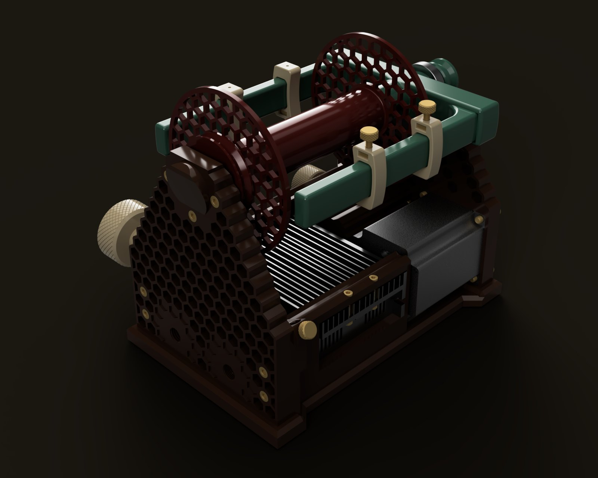
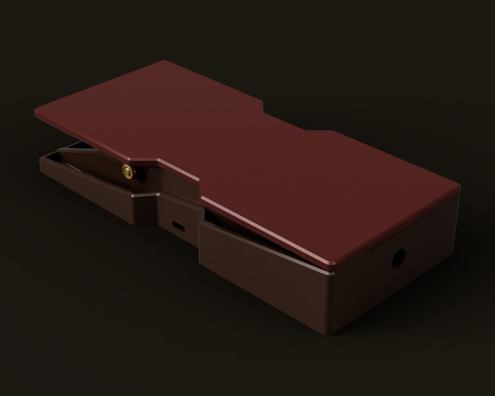
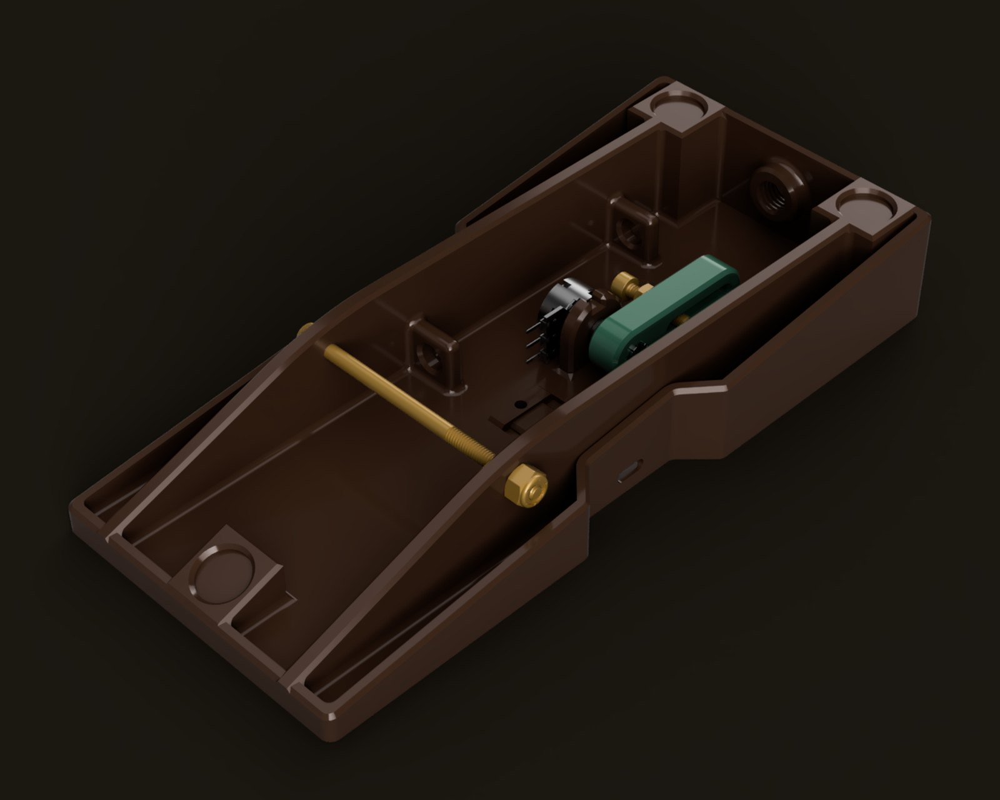
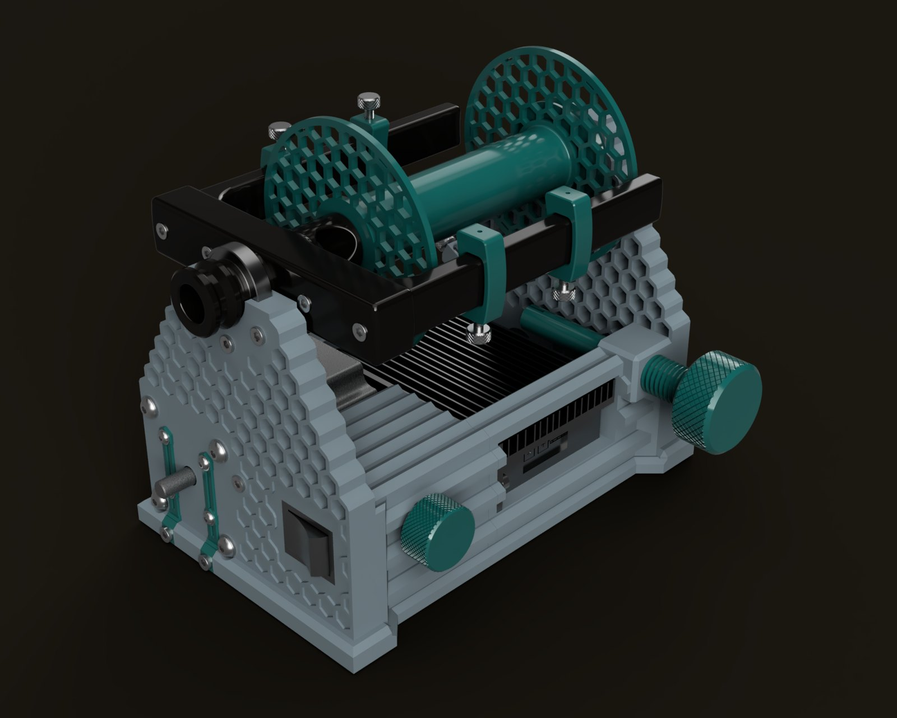
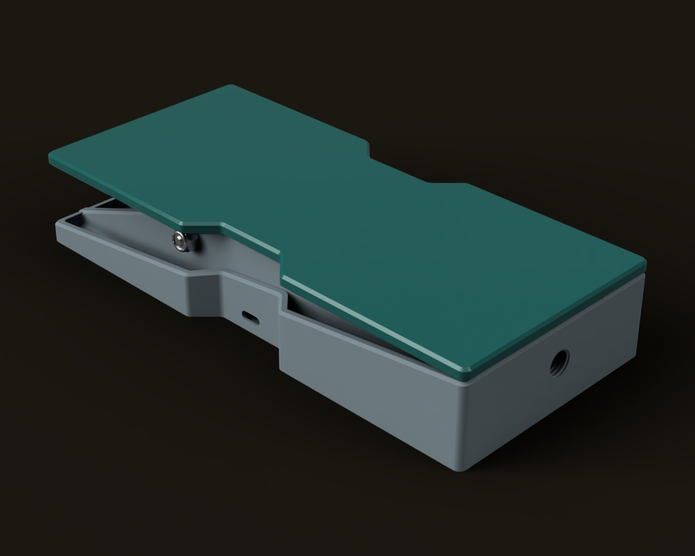
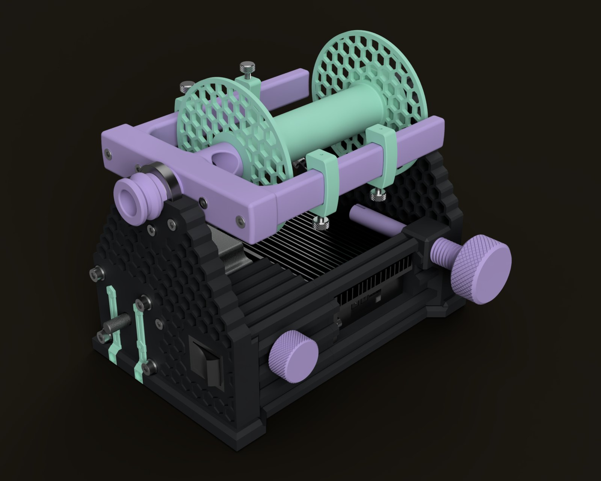
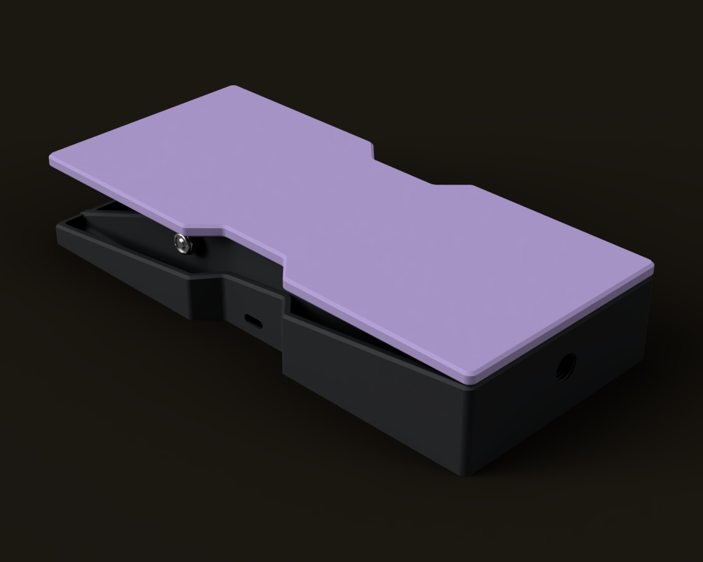
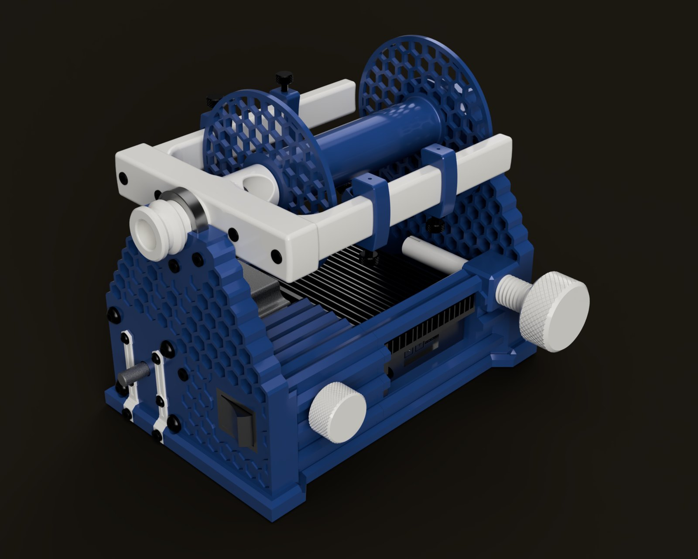
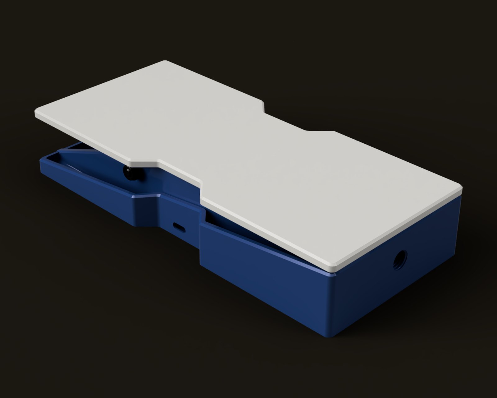

Clotho eSpinner
Released Aug 2026An electric spinning wheel built around a 94 W closed-loop brushless motor, with a 3D-printed frame, an optional foot pedal, and a flyer and bobbin change that doesn’t need any tools. Parts run about $97 a wheel if you split packs with a friend, or about $185 if you buy the whole list yourself.
Design notes: why the flyer is held at both ends, the bearing saga, and the spine that got deleted →




Renders from the published model, in the radio colors (more colors below).
Specs
- Motor
57BSD76 BLDC, NEMA 23 frame, 94 W, 24 V - Driver
BLD-510B closed-loop BLDC controller - Speed control
Panel knob, or foot pedal via a TRS jack - Flyer
Supported at both ends, tool-free change
Build notes
- Cheap 8 mm rod is usually sheared to length, which squashes the ends. If a bearing won’t go on, it’s probably the rod. Carefully machine them to size with a lathe or mill (or chuck them into a cordless drill and run them against a file and a handful of sandpaper).
- Print the structural parts in PETG, especially the flyer arms. PLA may not hold up to the load there, or to the heat wherever it ends up living.
- PETG starts going soft around 80 °C (175 °F) and PLA well before that. This shouldn’t need saying, but one Clotho has already melted in the Arizona sun, so if you live somewhere that hot and often spin inside cars with the windows rolled up, print it in ABS or ASA.
- The driver ships set to full speed and full current, which is more than the motor is rated for. Turn both trim pots all the way down before you power it up the first time, then bring them up.
- Plugging in the foot pedal disconnects the knob on the spinner. A Pro Micro reads the pedal and sends PWM to the driver, and you calibrate it over serial.
Color ideas
Clotho is a lot of separate parts, so it doesn’t have to be one color. In case you can’t decide, here are a few ideas. The frame is the risers, base and electronics housing, the flyer is the body, arms and orifice, and the accents are the knobs, hooks and motor mounts. The hardware colors are just for the renders; your screws will be whatever color the screws on the parts list are.
Radio. Dark brown frame, jade flyer, oxblood bobbin and motor mounts, ivory knobs and hooks, brass hardware. The pedal gets a brown base, an oxblood top and a jade yoke. The radio I’d have dreamed about (in black and white) if I’d been born in 1925.


Test bench. Gray frame, black flyer, and teal for the bobbin, knobs, hooks and motor mounts, with stainless hardware. Gray pedal base, teal top, black yoke.


Lavender. Charcoal frame, lavender flyer and knobs, and mint for the bobbin, hooks and motor mounts, with stainless hardware. Charcoal pedal base, lavender top, mint yoke.


Cobalt. Cobalt frame, bobbin and hooks, off-white flyer, knobs and motor mounts, and black hardware. Cobalt pedal base with an off-white top and yoke. Two rolls and you’re done.
Files
Everything you need to build one: the parts list with sources, the full STEP model, 8 printable 3MF assemblies, build and setup instructions, and the foot pedal firmware. It’s all CC BY-SA.
Get the files on Printables → View on GitHub Parts list and prices Foot pedal setup